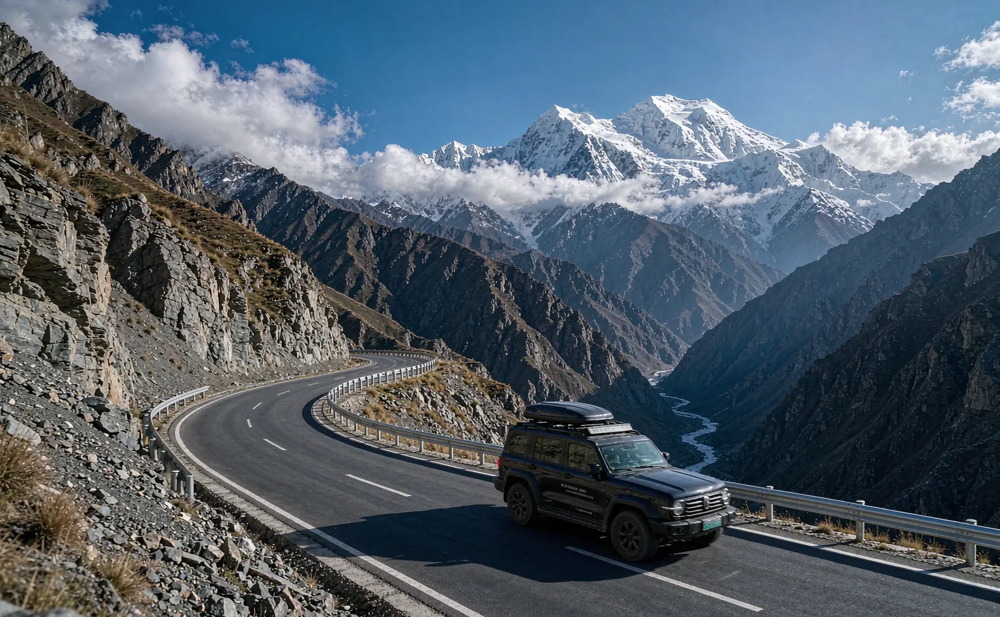

賽里木湖 · 伊犁
賽里木湖 · 伊犁

北疆 · 南疆 · 絲路 | 專屬包車客制
新疆
您的私人花園新疆
您的私人花園
現在請開始享受這一切的美好現在請開始享受這一切的美好
為什麼是我們
把新疆，交給真正懂它的人
不是標準化行程表，而是一段為你而寫、有人全程照應的邊疆敘事。

在地司機與車隊 · 實景在地司機 + 私人導遊
本地資深司機掌舵，隨車中文導遊全程陪同。安全、舒適、深度，帶你走進一個真實的新疆。
出發即建群，全程有人照應
專屬微信群裡有司機、導遊與客服。溝通順暢、遇事不慌，安心感來自被看見。
不趕路、不進店
依你的步調隨時停拍，把時間還給風景，把決定權還給你。
新疆實景
真實鏡頭下的新疆
四季更迭，處處皆風景——點圖可放大，這些畫面，等你親自走進。


“
原本以為只是包車，結果是一場被照顧得很好的旅行。司機像老朋友，導遊比我們還懂新疆。
—— 林女士 · 2026 伊犁河谷 10 日
常見問題
新疆旅遊常見問題
出發前最常被問到的幾個問題，先在這裡說清楚。
Q: 新疆適合自由行還是跟團？
新疆幅員遼闊，景點之間距離極遠，公共交通非常不便。包車旅遊才是最佳選擇——自由度高、安全舒適，還能隨時停車拍照。
Q: 新疆旅遊安全嗎？
非常安全。新疆是中國治安最好的地區之一，隨處可見警察巡邏站，對遊客保護措施完善。我們的司機均為本地資深司機，熟悉路況與安全資訊。
Q: 新疆旅遊最佳季節是什麼時候？
北疆最佳：6-9月（草原綠、湖泊藍）；南疆全年皆宜，4-6月與9-10月最佳（避開酷暑）；冬季則可享受阿勒泰滑雪與喀納斯雪景。
Q: 新疆旅遊需要幾天？
北疆環線建議 8-10 天；南北疆聯遊建議 12-15 天；若時間有限，可選擇伊犁 6-7 天或喀什周邊 5-6 天。
How it works
3 步，客制你的新疆
沒有制式團、沒有固定班表。從一句「想去哪裡」開始，我們把剩下的都安排好。
說出你的想望
告訴我們天數、季節、想看的風景與同行的人。想慢一點、想深入一點，都算數。
收到專屬路線
在地團隊依路況、花期與日照，排一條真正走得順的路線，連停留點都替你想好。
出發，只管看風景
專車專導全程陪同，隨停隨拍。其餘的住宿、門票與接送，出發前就已妥當。